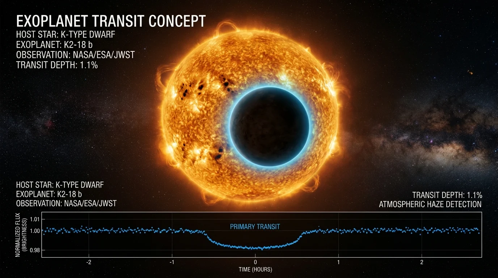

An exoplanet is any planet orbiting a star outside our solar system. Over 5,500 exoplanets have been confirmed, primarily discovered using the transit method: detecting the minuscule periodic dip in starlight as an orbiting world crosses directly between its host star and telescope detectors.

Exoplanet transit detection method. When an exoplanet crosses the disk of its host star, telescope photometers measure the fraction of blocked starlight (proportional to the ratio of planetary radius to stellar radius: \(\Delta F / F \approx (R_p / R_*)^2\)), revealing the planet's size and atmospheric composition. Credit: NASA / JPL-Caltech / Ames.